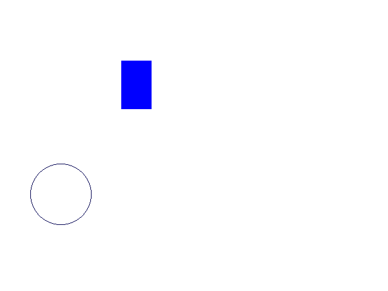

A tag area é usada para definir áreas clicáveis em um mapa de imagem. Esta tag deve ser sempre filha de uma tag map. Dica: para pegar as coordenadas de rect no gimp use a ferramenta encolher automaticamente e veja que x1 = x y1 = y x2 = x+w y2 = y+h e do círculo desenhe ele com alguma função da linguagem c ou c++ e depois veja as coordenadas dele o mesmo serve para polígonos.